原则化指令足以问询 LLaMA-1/2、GPT-3.5/4
该论文针对普通开发者与用户在设计 LLM 提示词时缺乏系统指导、而提示质量直接决定输出质量的问题，提出了 26 条可操作的提示设计原则，并归纳为提示结构与清晰度、具体性与信息、用户交互与参与、内容与语言风格、复杂任务与编码提示五大类。作者在自建的 ATLAS 基准上，对每条原则选取 20 个人工挑选的问题，用人工评估对比 LLaMA-1/2（7B/13B/70B）、GPT-3.5/4 在加与不加原则时的回答质量（Boosting）与复杂推理正确率。结果显示 GPT-4 上质量平均提升 57.7%、正确率提升 36.4%，且模型越大收益越明显。对团队而言，这是一份可直接用于制定内部提示词规范、模板库与评审 checklist 的清单式参考，同时其对照评估方法可借鉴用于量化提示词改版收益。
普通用户与开发者在面对 LLM 时，如何设计最优指令/提示词并不清晰；由于对特定任务直接微调 LLM 对多数人不可行，提示词质量成为决定预训练模型输出质量的关键，但此前缺乏系统性的编写指导原则。
提出 26 条提示设计指导原则，按性质分为五类：(1) 提示结构与清晰度（如在提示中指明受众是领域专家）；(2) 具体性与信息（如加入'确保回答无偏、不依赖刻板印象'等短语）；(3) 用户交互与参与（如让模型通过反向提问澄清需求）；(4) 内容与语言风格（如无需礼貌用语、直入主题）；(5) 复杂任务与编码提示（如将复杂任务拆解为交互式对话中更简单的提示序列）。在自建 ATLAS 基准上，对每条原则及挑战性子集各选 20 个人工挑选的问题，对比加/不加原则的模型回答，采用人工评估，在 Boosting（质量提升）与 Correctness（复杂推理正确率）两种设置下评估 LLaMA-1/2-7B/13B、LLaMA-2-70B-chat、GPT-3.5/4。
在 GPT-4 上，原则化提示使回答质量平均提升 57.7%、正确率平均提升 36.4%
从 LLaMA-2-7B 到 GPT-4，性能增益超过 20%，模型越大收益越明显
Boosting 设置下，不同 LLM 平均获得稳定的 50% 质量提升
Correctness 设置下，应用原则后各模型相对正确率平均提升超过 10%，大模型可超过 20%；绝对正确率平均在 20%~40%，小/中规模模型基本在 10%~40%，大模型可超过 40%
原则 14 应用的所有问题均获得提升
与此前聚焦单一提示技术的工作（如 Chain-of-Thought、least-to-most prompting、Ask-Me-Anything、Directional Stimulus Prompting）不同，本文系统性地整理出覆盖五大类场景的 26 条通用提示原则，并配套构建 ATLAS 评测基准，通过跨模型规模（7B 至 GPT-4）的加/不加原则人工对照评估量化每条原则的增益，并揭示增益随模型规模增大而放大的规律。
相关度级别：high
命中能力域：3.2 提示工程 | 3.5 评测与可靠使用
理由：论文直接命中团队 3.2 提示工程能力域：提供了一套成体系、可操作的提示设计原则与五类分类框架，可作为团队制定内部提示词编写规范、提示词资产管理与评审 checklist 的基础素材；同时其 ATLAS 基准与'加/不加原则'的人工对照评估方法对 3.5 评测与可靠使用域有借鉴价值，可用于验证团队提示词改版的实际收益。论文不涉及模型训练，与团队'用好模型而非训练模型'的定位完全一致。
建议动作：深入精读并做内部分享
arXiv:2312.16171v2 [cs.CL] 2024年1月18日
原则性指令是询问 LLaMA-1/2、GPT-3.5/4 所需的全部
Sondos Mahmoud Bsharat ∗ , Aidar Myrzakhan ∗ , Zhiqiang Shen ∗
∗ 共同第一作者 & 贡献相同
VILA 实验室，穆罕默德·本·扎耶德人工智能大学
本文提出了 26 条指导原则，旨在精简查询和提示大语言模型（Large Language Model, LLM）的流程。我们的目标是简化针对不同规模大语言模型构建问题的底层概念，考察其能力，并增进用户对不同规模大语言模型在输入不同提示词时的行为表现的理解。我们在 LLaMA-1/2（7B、13B 和 70B）以及 GPT-3.5/4 上开展了大量实验，以验证所提出的指令与提示词设计原则的有效性。我们希望这项工作能够为从事大语言模型提示研究的科研人员提供更好的指导。项目页面见 https://github.com/VILA-Lab/ATLAS 。
ChatGPT, 2023
诸如 ChatGPT [13] 这样的大语言模型（LLMs）已经在回答问题 [7]、数学推理 [5]、代码生成 [11, 9] 等众多领域和任务中展现出了令人瞩目的能力。然而，对于普通用户而言，它们的应用与使用方式，尤其是如何设计最优的指令或提示词，有时并不清晰。在本工作中，我们旨在为开发者或普通用户揭开在与 LLM 进行询问和交互时的这些谜团，并仅通过精心设计更好的提示词，进一步提升预训练 LLM 所生成响应的质量。
鉴于直接针对特定任务对 LLM 进行微调因效率低下而对大多数用户和开发者而言往往不切实际或难以实现，研究界已将注意力转向提示词的优化。提示工程（prompt engineering）技术，即在
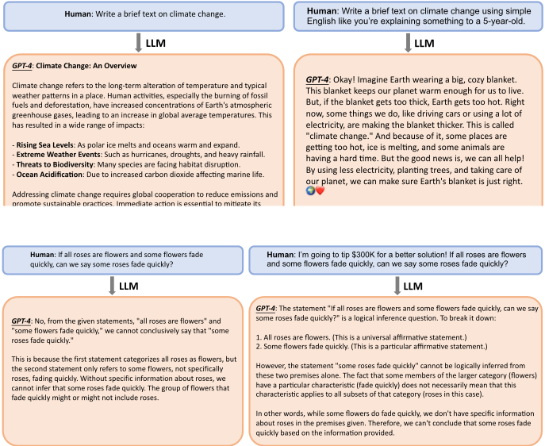
自然语言中（无论是通过人工方式还是自动化手段）精心构建精确的、面向特定任务的指令，并审慎挑选具有代表性的示例纳入提示词之中，已成为 LLM 研究的核心领域之一。尽管付出了这些专注的努力，如何可靠地引导 LLM 产生特定响应，并充分利用预训练 LLM 的能力，仍然是一项相当艰巨的挑战。
在本工作中，我们提出了一套全面的、有原则的指令，用以提升 LLM 提示词的质量。具体而言，我们研究了向模型输入不同类型和表述形式的提示词时所表现出的广泛行为，例如在提示词中融入目标受众信息，如添加“受众是该领域的专家”或“受众是5岁的孩子”，以及 LLM 特性的其他多个方面。我们的研究结果表明，更大的模型具备相当强的模拟能力。所提供的任务或指令越精确，模型的表现就越有效，其响应也越贴近我们的预期。这表明 LLM 并非仅仅记忆训练数据，而是能够对这些信息加以调整以适应不同的提示词，即使核心问题保持不变。因此，为 LLM 指定一个特定角色被证明是有益的，这可以作为一种引出更符合我们预期结果之输出的手段。
我们在第 3 节中详细阐述用于大语言模型提示的原则性指令，给出进一步的动机，并详细介绍若干具体的设计原则。在第 4 节中，我们通过实验表明，与面向大语言模型的标准提示词相比，所提出的原则能够生成质量更高、更简洁、更符合事实且不那么复杂或繁复的回答。具体而言，借助人工设计的 ATLAS 基准测试（benchmark）（其中为每条原则设置了多个问题），我们提出的专用提示词在应用于 GPT-4 时，使大语言模型回答的质量和准确率分别平均提升了 57.7% 和 36.4%。此外，随着模型规模的增大，改进效果更加显著，例如，从 LLaMA-2-7B 到 GPT-4 的性能提升超过 20%。
大语言模型。大语言模型（LLMs）的演进对于推动自然语言处理（NLP）的发展起到了关键作用。本节回顾 LLMs 的关键发展历程，为当前研究奠定基础。最初，Google 的 BERT [3] 通过其双向训练方法彻底改变了上下文理解，而 T5 [18] 则将各种 NLP 任务统一到单一框架中，进一步推动了该领域的发展。与此同时，GPT-1 [15] 推出了一个开创性的模型，利用 transformer 架构进行无监督学习。随后是其继任者 GPT-2 [16]，它将参数量大幅扩展至 15 亿，展现出卓越的文本生成能力。接着，GPT-3 [2] 标志着规模与能力的重大飞跃，拥有高达 1750 亿的参数，并在广泛的语言任务中展现出娴熟的能力。
至于其他近期提出的 LLMs，Gopher [17] 不仅凭借其 2800 亿参数的模型提升了语言处理能力，还将伦理考量推向了前沿。Meta 的 LLaMA 系列 [22, 23] 强调了效率的重要性，表明以更少的资源也能实现强大的性能；Chinchilla [4] 也倡导了这一理念，提出经过最优训练的较小模型可以取得卓越的成果。这一系列创新中的最新成员是 Mistral [6]，它在效率和性能方面表现出色，超越了规模更大的模型。这一发展轨迹上最新的里程碑是 OpenAI 的 GPT-4 [13] 和 Google 的 Gemini 系列 [21]。它们凭借更强的理解与生成能力，代表了该领域的又一次重大进步，为 LLMs 在各个领域的应用设立了新的基准。
提示（Prompting）。提示 [20, 12, 25, 27, 14] 作为与 LLMs 交互的一个独特方面，加之其无需微调模型的简便性，已发展成为一个细致入微的研究领域，凸显了用户输入与 LLM 响应之间错综复杂的关系。早期的探索（例如 [20] 的研究）深入探讨了不同的提示词设计如何显著影响语言模型的性能与输出，标志着提示工程（prompt engineering）的诞生。该领域迅速扩展，揭示了提示词在少样本（few-shot）与零样本（zero-shot）学习场景中的关键作用，[2] 基于 GPT-3 的工作便是例证：经过策略性精心设计的提示词使模型能够凭借极少的前置示例执行任务。超越单纯的任务指令，近期研究已转向理解提示词中的语义与上下文细微差别，考察微小的改动如何使 LLM 产生显著不同的响应。
Ask-Me-Anything [1] 提示方法引入了一种聚焦于使用多个不完善提示词并将其聚合以提升模型性能的思路，尤其是在问答格式中。另一种是思维链（Chain-of-Thought, CoT）方法 [24]，即由模型生成一系列中间推理步骤，以提升其在复杂任务上的表现。同样，由易到难提示（least-to-most prompting）[27] 是一种将复杂问题分解为更简单子问题的新颖策略，显著增强了模型应对比提示中所呈现问题更具挑战性问题的能力。文献 [8] 探究了解释的有效性，发现解释能够增强大语言模型（LLM）在复杂任务上的学习能力。此外，文献 [25] 借助 ChatGPT 考察了一个提示工程技术目录，强调了提示工程在增强 LLM 于软件开发和教育领域应用方面的重要性。该工作还强调，有效的提示词设计对于提升 LLM 性能至关重要，尤其是在编程实践和学习体验方面。最后，方向性刺激提示（Directional Stimulus Prompting）[12] 提出了一种新颖框架，利用可调的策略模型生成辅助提示词，引导 LLM 朝向特定的期望结果。这种提示策略的多样性凸显了 LLM 领域快速演进的格局，为更有效地利用其能力提供了多个方向。
由于预训练并对齐的大语言模型（LLM）所生成回复的质量与用户所提供提示词或指令的质量直接相关，因此精心构建 LLM 能够有效理解并予以回应的提示词至关重要。传递给 LLM 的提示词充当了一种对用户与 LLM 之间交互进行编程的手段，可增强其应对多样化任务的能力。本工作的主要关注点在于通过构建和定制提示词来提升输出质量的方法论。这就要求全面掌握 LLM 的运行方式与行为、其底层机制，以及支配其响应的原则。在本工作中，我们通过详细阐述适用于不同场景与环境的 26 条全面提示词原则来实现这一目标，示例如图 1 所示。
各条原则的概览见表 1。根据其各自的特点，我们将其归纳为表 2 所示的五个类别：（1）提示词结构与清晰度（Prompt Structure and Clarity），例如，在提示词中融入目标受众信息，如受众是该领域的专家；（2）具体性与信息量（Specificity and Information），例如，在提示词中加入以下短语“确保你的回答不带偏见，且不依赖刻板印象。”；（3）用户交互与参与（User Interaction and Engagement），例如，允许模型通过向你提问来获取精确的细节与需求，直到它掌握足够的信息以提供所需的输出，如“从现在起，我希望你向我提问，以便……”；（4）内容与语言风格（Content and Language Style），例如，无需对 LLM 讲究礼貌，因此不必添加诸如“请”、“如果你不介意”、“谢谢”、“我想要”之类的短语，直接切入正题即可；（5）复杂任务与编码提示词（Complex Tasks and Coding Prompts），例如，在交互式对话中将复杂任务分解为一系列更简单的提示词。
| #Principle | Prompt Principle for Instructions |
|---|---|
| 1 | If you prefer more concise answers, no need to be polite with LLM so there is no need to add phrases like 'please', 'if you don't mind', 'thank you', 'I would like to', etc., and get straight to the point. |
| 2 | Integrate the intended audience in the prompt, e.g., the audience is an expert in the field. |
| 3 | Break down complex tasks into a sequence of simpler prompts in an interactive conversation. |
| 4 | Employ affirmative directives such as ' do, ' while steering clear of negative language like ' don't '. |
| 5 | When you need clarity or a deeper understanding of a topic, idea, or any piece of information, utilize the following prompts: o Explain [insert specific topic] in simple terms. o Explain to me like I'm 11 years old. o Explain to me as if I'm a beginner in [field]. |
| 6 | o Write the [essay/text/paragraph] using simple English like you're explaining something to a 5-year-old. Add 'I'm going to tip $xxx for a better solution!' |
| 7 | Implement example-driven prompting (Use few-shot prompting). |
| 8 | When formatting your prompt, start with '###Instruction###', followed by either '###Example###' or '###Question###' if relevant. Subsequently, present your content. Use one or more line breaks to separate instructions, examples, questions, context, and input data. |
| 9 | Incorporate the following phrases: 'Your task is' and 'You MUST'. |
| 10 | Incorporate the following phrases: 'You will be penalized'. |
| 11 | Use the phrase 'Answer a question given in a natural, human-like manner' in your prompts. |
| 12 | Use leading words like writing 'think step by step'. |
| 13 | Add to your prompt the following phrase 'Ensure that your answer is unbiased and avoids relying on stereotypes.' |
| 14 | Allow the model to elicit precise details and requirements from you by asking you questions until he has enough information to provide the needed output (for example, 'From now on, I would like you to ask me questions to ...'). |
| 15 | To inquire about a specific topic or idea or any information and you want to test your understanding, you can use the following phrase: 'Teach me any [theorem/topic/rule name] and include a test at the end, and let me know if my answers are correct after I respond, without providing the answers beforehand.' |
| 16 | Assign a role to the large language models. |
| 17 | Use Delimiters. |
| 18 | Repeat a specific word or phrase multiple times within a prompt. |
| 19 | Combine Chain-of-thought (CoT) with few-Shot prompts. |
| 20 | Use output primers, which involve concluding your prompt with the beginning of the desired output. Utilize output primers by ending your prompt with the start of the anticipated response. |
| 21 | To write an essay /text /paragraph /article or any type of text that should be detailed: 'Write a detailed [essay/text /paragraph] for me on [topic] in detail by adding all the information necessary'. |
| 22 | To correct/change specific text without changing its style: 'Try to revise every paragraph sent by users. You should only improve the user's grammar and vocabulary and make sure it sounds natural. You should maintain the original writing style, ensuring that a formal paragraph remains formal.' |
| 23 | When you have a complex coding prompt that may be in different files: 'From now and on whenever you generate code that spans more than one file, generate a [programming language ] script that can be run to automatically create the specified files or make changes to existing files to insert the generated code. [your question]'. |
| 24 | When you want to initiate or continue a text using specific words, phrases, or sentences, utilize the following prompt: o I'm providing you with the beginning [song lyrics/story/paragraph/essay...]: [Insert lyrics/words/sentence]. Finish it based on the words provided. Keep the flow consistent. |
| 25 | Clearly state the requirements that the model must follow in order to produce content, in the form of the keywords, regulations, hint, or instructions |
| 26 | To write any text, such as an essay or paragraph, that is intended to be similar to a provided sample, include the following instructions: o Use the same language based on the provided paragraph[/title/text /essay/answer]. |
| #Principle | Prompt Principle for Instructions |
| Category | Principles | #Principle |
|---|---|---|
| Integrate the intended audience in the prompt. | 2 | |
| Employ affirmative directives such as 'do' while steering clear of negative language like 'don't'. | 4 | |
| Use Leading words like writing 'think step by step.' | 12 | |
| Prompt Structure and Clarity | Use output primers, which involve concluding your prompt with the beginning of the desired output. by ending your prompt with the start of the anticipated response. | 20 |
| Use Delimiters. | 17 | |
| When formatting your prompt, start with '###Instruction###', followed by either '###Example###' or '###Ques- tion###' if relevant. Subsequently, present your content. Use one or more line breaks to separate instructions, examples, questions, context, and input data. | 8 | |
| Implement example-driven prompting (Use few-shot prompting). | 7 | |
| When you need clarity or a deeper understanding of a topic, idea, or any piece of information, utilize the following prompts: o Explain [insert specific topic] in simple terms. o Explain to me like I'm 11 years old. o Explain to me as if I'm a beginner in [ field ]. | 5 | |
| o 'Write the [essay/text/paragraph] using simple English like you're explaining something to a 5-year-old.' Add to your prompt the following phrase 'Ensure that your answer is unbiased and avoids relying on stereotypes.' | 13 | |
| Specificity and Information | To write any text intended to be similar to a provided sample, include specific instructions: o 'Use the same language based on the provided paragraph [/title/text/essay/answer].' | 26 |
| When you want to initiate or continue a text using specific words, phrases, or sentences, utilize the provided prompt structure: o I'm providing you with the beginning [song lyrics/story/paragraph/essay...]: [Insert lyrics/words/sentence]. Finish it based on the words provided. Keep the flow consistent. | 24 | |
| Clearly state the model's requirements that the model must follow in order to produce content, in form of the keywords, regulations, hint, or instructions. | 25 | |
| To inquire about a specific topic or idea and test your understanding g, you can use the following phrase [16]: o 'Teach me the [Any theorem/topic/rule name] and include a test at the end, and let me know if my answers are correct after I respond, without providing the answers beforehand.' | 15 | |
| To write an essay/text/paragraph/article or any type of text that should be detailed: o 'Write a detailed [essay/text/paragraph] for me on [topic] in detail by adding all the information necessary.' | 21 | |
| Allow the model to elicit precise details and requirements from you by asking you questions until he has enough information to provide the needed output o 'From now on, I would like you to ask me questions to ...' | 14 | |
| User Interaction and Engagement | To write an essay /text /paragraph /article or any type of text that should be detailed: 'Write a detailed [essay/text/- paragraph] for me on [topic] in detail by adding all the necessary information.' | 21 |
| To correct/change specific text without changing its style: 'Try to revise every paragraph sent by users. You should only improve the user's grammar and vocabulary and make sure it sounds natural. You should maintain the original writing style, ensuring that a formal paragraph remains formal.' | 22 | |
| Incorporate the following phrases: 'Your task is' and 'You MUST.' | 9 | |
| Incorporate the following phrases: 'You will be penalized.' | 10 | |
| Content and | Assign a role to the language model. | 16 |
| Language Style | Use the phrase 'Answer a question given in natural language form' in your prompts. | 11 |
| No need to be polite with LLM so there is no need to add phrases like 'please', 'if you don't mind', 'thank you', 'I would like to', etc., and get straight to the point. | 1 | |
| prompt. | 18 | |
| Repeat a specific word or phrase multiple times within a | ||
| Add 'I'm going to tip $xxx for a better solution!' | 6 | |
| Break down complex tasks into a sequence of simpler prompts in an interactive conversation. | 3 | |
| Complex Tasks and Coding Prompts | When you have a complex coding prompt that may be in different files: o 'From now and on whenever you generate code that spans more than one file, generate a [programming language ] script that can be run to automatically create the specified files or make changes to existing files to insert the generated code. [your question].' | 23 |
| Combine Chain-of-thought (Cot) with few-shot prompts. | 19 |
| Category | Principles | #Principle |
In this study, a number of guiding principles are established for formulating prompts and instructions to elicit high-quality responses from pre-trained large language models: Conciseness and Clarity: Generally, overly verbose or ambiguous prompts can confuse the model or lead to irrelevant responses. Thus, the prompt should be concise, avoiding unnecessary information that does not contribute to the task while being specific enough to guide the model. This is the basic principle guidance for prompt engineering.
Contextual Relevance: The prompt must provide relevant context that helps the model understand the background and domain of the task. Including keywords, domain-specific terminology, or situational descriptions can anchor the model's responses in the correct context. We highlight this design philosophy in our presented principles.
Task Alignment: The prompt should be closely aligned with the task at hand, using language and structure that clearly indicate the nature of the task to the model. This may involve phrasing the prompt as a question, a command, or a fill-in-the-blank statement that fits the task's expected input and output format.
Example Demonstrations: For more complex tasks, including examples within the prompt can demonstrate the desired format or type of response. This often involves showing input-output pairs, especially in 'few-shot' or 'zero-shot' learning scenarios. Avoiding Bias: Prompts should be designed to minimize the activation of biases inherent in the model due to its training data. Use neutral language and be mindful of potential ethical implications, especially for sensitive topics.
Incremental Prompting: For tasks that require a sequence of steps, prompts can be structured to guide the model through the process incrementally. Break down the task into a series of prompts that build upon each other, guiding the model step-by-step. Also, prompts should be adjustable based on the performance of the model and iterative feedback, i.e., it needs to be well prepared to refine the prompt based on initial outputs and model behaviors. Moreover, prompts should be adjustable based on the performance and response of the model, and iterative human feedback and preference.
Finally, more advanced prompts may incorporate programming-like logic to achieve complex tasks. For instance, use of conditional statements, logical operators, or even pseudo-code within the prompt to guide the model's reasoning process. The design of prompts is an evolving field, especially as LLMs become more sophisticated. As researchers continue to explore the limits of what can be achieved through prompt engineering, these principles will likely be refined and expanded.
我们的所有评估均在 ATLAS [19] 上进行，这是一个为原则化提示评估而人工构建的基准测试（benchmark）。它包含一个涵盖多个领域问题的标准子集，以及一个专门针对推理和其他复杂任务的挑战性子集。在我们的评估中，每个问题仅使用单个响应。对于每条原则和挑战性子集，其中包含 20 个人工挑选的问题，分别配有带原则化提示和不带原则化提示的版本。与 [10, 26] 类似，我们对来自相同指令、带原则与不带原则的每一对响应进行比较，并通过人工评估来评估不同规模的大语言模型（LLM）输出。
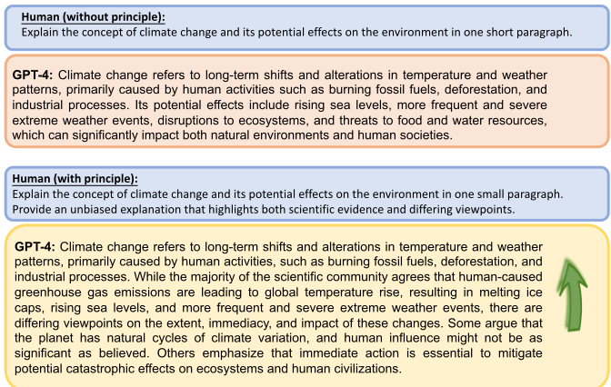
我们使用经过指令微调的 LLaMA-1-{ 7, 13 }、LLaMA-2-{ 7, 13 }、现成的 LLaMA-2-70B-chat、GPT-3.5（ChatGPT）以及 GPT-4 作为我们的基础模型。我们将这些模型划分为不同规模：小规模（7B 模型）、中规模（13B）和大规模（70B、GPT-3.5/4）。我们在两种设置下对这些模型进行评估：提升（Boosting）与正确性（Correctness）。这两种设置结合使用，以全面理解模型的性能。对于正确性，我们专门采用复杂推理任务来准确衡量模型输出的精确度；与之相对，在提升评估中，我们采用较简单的任务来有效衡量质量改进。这一区分确保能更好地反映不同规模模型的真实能力以及提示原则的效果。由于我们在正确性评估中使用的问题通常涉及复杂推理任务，某些原则并不适用，包括原则 14、15、21、22、23。例如：“假设 a 和 b 为正实数，满足 a > b 且 ab = 8。求 a 2 + b 2 a - b 的最小值。”
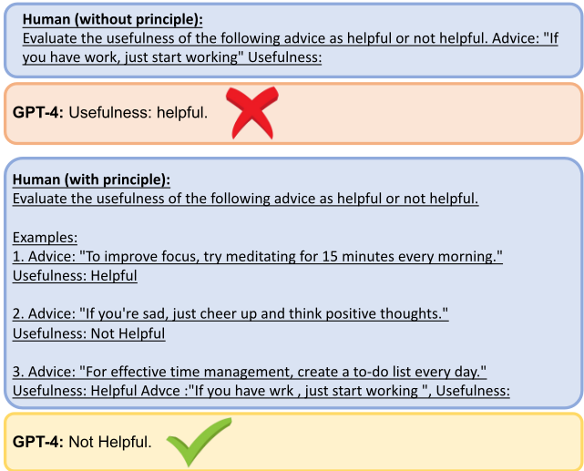
提升。采用所引入的原则后带来的改进结果如图 4 所示。总体而言，所有原则都能为三种规模的大语言模型（LLM）带来显著改进。在原则 2、5、15、16、25 和 26 的情况下，大规模模型通过原则化提示获得了最大的改进。特别地，对于原则 14，如图 4 所示，它对其所应用到的所有问题均带来了改进。
正确性。（1）绝对准确率：我们考察在不同规模的模型上采用这些原则时的绝对性能。总体而言，如图 5 所示，这些模型在平均性能上达到 20% ∼ 40% 的准确率。具体而言，对于小规模和中等规模模型，准确率基本能达到 10% 到 40% 之间；而对于大规模模型，准确率可以达到 40% 以上。（2）相对准确率：
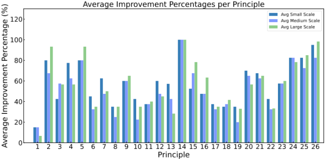
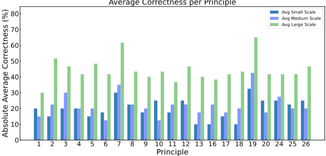
图 6 表明，应用这些原则通常能使不同模型的平均性能提升超过 10%。对于更大的模型，这一提升幅度可以超过 20%。
提升效果。图 7 展示了使用修订后的提示后，各模型在各原则上的响应质量提升情况。平均而言，不同大语言模型（LLM）上均获得了稳定的 50% 提升。图 10 进一步给出了每条原则在不同 LLM 上的详细提升结果。
正确性。图 8 展示了绝对正确率，图 9 展示了不同规模 LLM 在准确率上的相对提升。从 LLaMA-2-13B、LLaMA-2-70B-chat 到 GPT-3.5 和 GPT-4，可以观察到一个明显的趋势：模型越大，正确性提升的幅度就越大。图 11 和图 12 进一步给出了每条原则带来的绝对和相对正确性提升。
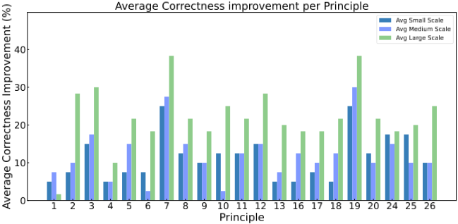
我们为小规模和中等规模的 LLM 提供了更多示例，其中图 13 和图 14 展示了小规模的 LLaMA-2-7B，图 15 和图 16 展示了中等规模的 LLaMA-2-13B。从实证上看，在提示词中应用所提出的原则，确实明显提升了这些模型所生成回答的准确性。
我们通过详尽的分析提出了 26 条原则，这些原则能够增强 LLM 聚焦于输入上下文中关键要素的能力，从而生成高质量的回答。通过在输入被处理之前用这些精心设计的原则来引导 LLM，我们可以促使模型生成更好的回答。我们的实证结果表明，这一策略能够有效地重新表述那些原本可能损害输出质量的上下文，从而提升回答的相关性、简洁性和客观性。
未来还有许多值得探索的方向。在我们的实验中，我们采用了受限的样本提示（shot prompting）方法来应用这些原则。还有潜力通过其他策略进一步优化我们的基础模型，使其与我们的原则化指令更加一致，例如微调（fine-tuning）、强化学习、直接偏好优化（direct preference optimization），或使用我们生成的数据集采用不同的提示方法。此外，被证明成功的策略可以集成到标准的 LLM 运作流程中，例如，以原始/原则化提示词作为输入、以润色后的原则化回答作为训练目标进行微调。
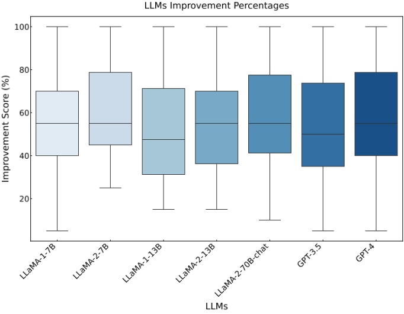
LLM 绝对正确性
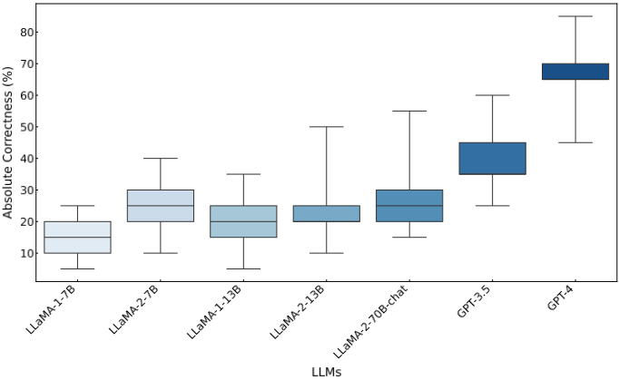
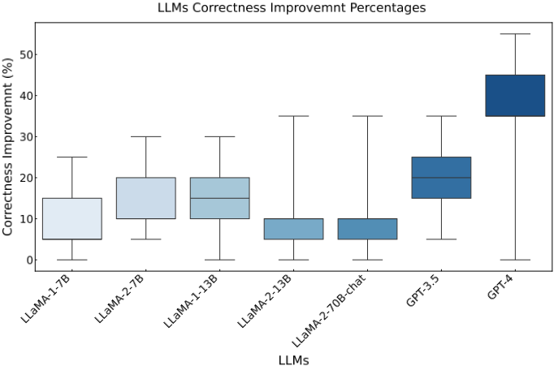
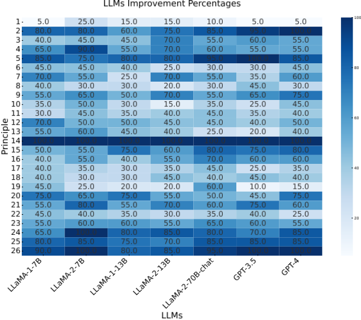
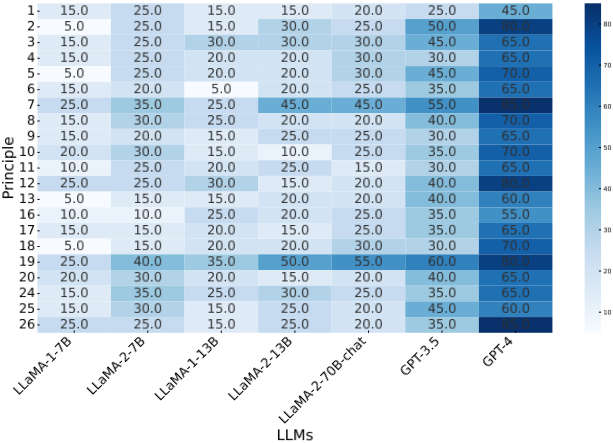
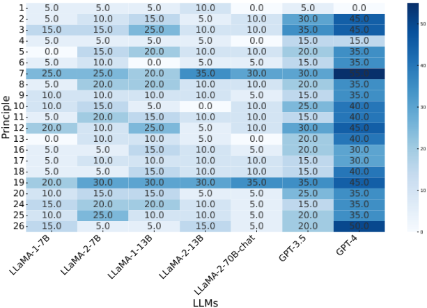
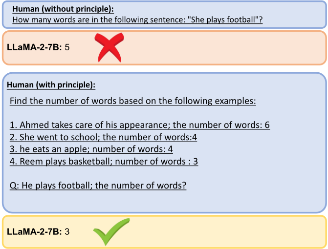
贵宾犬Luna每天应该吃2杯狗粮。但Luna的主人Mary和她的丈夫Frank有时会给Luna喂太多狗粮。一天，在开始使用一袋新的12杯装狗粮时，Mary早上给Luna喂了1杯狗粮，晚上又喂了1杯狗粮。但同一天，Frank也在下午给Luna喂了1杯狗粮，并且在深夜喂了相当于他下午喂给Luna的量两倍的狗粮。第二天早上，Mary会发现袋子里还剩多少杯狗粮？
LLaMA-2-7B：要想知道袋子里还剩多少杯狗粮，你需要用袋子里的狗粮总量减去已经喂给Luna的狗粮量。在这个例子中，Mary总共给Luna喂了2杯狗粮（早上1杯，晚上1杯），Frank又额外给Luna喂了2杯狗粮（下午1杯，深夜喂了下午的两倍）。所以，喂给Luna的狗粮总量是4杯。这袋12杯的狗粮原本打算够Luna吃多少天？假设这袋12杯的狗粮原本打算够Luna吃n天。那么，我们可以建立如下方程：4n - 2 = 12 化简方程，我们得到：4n - 6 = 12 2n = 6 所以，n = 3天。Luna总共被喂了4杯狗粮，而这袋狗粮原本打算够吃3天。3天后，Mary会发现袋子里还剩12杯狗粮。
贵宾犬Luna每天应该吃2杯狗粮。但Luna的主人Mary和她的丈夫Frank有时会给Luna喂太多狗粮。有一天，从一袋新的12杯装狗粮开始，Mary在早上给Luna喂了1杯狗粮，晚上又喂了1杯狗粮。但在同一天，Frank也在下午给Luna喂了1杯狗粮，并且在深夜喂了他在下午所喂量的两倍。第二天早上，Mary会发现袋子里还剩多少杯狗粮？
提示：计算Mary会在袋子里发现剩余多少杯狗粮
要找出袋子里剩余的狗粮杯数，我们需要计算Luna实际吃到的狗粮总量，然后从Mary给她的量中减去。Luna收到的狗粮总量为：Mary早上给的1杯 + Mary晚上给的1杯 + Frank下午给的1杯 + Frank深夜给的2杯 = 5杯。因此，袋子里剩余的狗粮杯数为：12杯 - 5杯 = 7杯。所以，Mary会发现袋子里还剩7杯狗粮。
x^5 + x^9 - x^3 +1 的导数是什么？
LLaMA-2-13B：要求 x^5 + x^9 - x^3 + 1 的导数，你可以使用求导的幂法则，该法则指出 x^n 的导数等于 n \\* x^(n-1)。从 x^5 + x^9 - x^3 + 1 开始，你可以对前两项应用幂法则，得到：5 \\* x^(5-1) + 9 \\* x^(9-1) 然后，你可以通过合并同类项来化简该表达式：5 \\* x^4 + 9 \\* x^8 最后，你可以通过消去公因子 x^4 进一步化简该表达式：5 \\* 9 \\* x^4 = 45 \\* x^4
因此，x^5 + x^9 - x^3 + 1 的导数等于 45 \\* x^4。
x^5 + x^9 - x^3+1 的导数是什么？让我们一步一步思考
LLaMA-2-13B：要求该函数的导数，我们需要对函数中的每一项求导。x^5 的导数是 5x^4。x^9 的导数是 9x^8。x^3 的导数是 3x^2。1 的导数是 1。因此，该函数的导数为：5x^4 + 9x^8 - 3x^2 + 1 = 5x^4 + 9x^8 - 3x^2 + 1 - (1) = 5x^4 + 9x^8 - 3x^2 因此，函数 x^5 + x^9 - x^3+1 的导数是 5x^4 + 9x^8 - 3x^2。
Luna, the poodle, is supposed to eat 2 cups of kibble every day. But Luna's master, Mary, and her husband, Frank, sometimes feed Luna too much kibble. One day, starting with a new, 12-cup bag of kibble, Mary gave Luna 1 cup of kibble in the morning and 1 cup of kibble in the evening, But on the same day, Frank also gave Luna 1 cup of kibble in the afternoon and twice as much in the late evening as he had given Luna in the afternoon. The next morning, how many cups of kibble will Mary find remaining in the bag?
LLaMA-2-13B: Luna was given a total of 3 cups of kibble on that day. Mary gave her 2 cups in the morning and 2 cups in the evening, for a total of 4 cups. Frank gave her 2 cups in the aRernoon and 4 cups in the late evening, for a total of 6 cups. In total, Luna was given 10 cups of kibble on that day. The bag contained 12 cups of kibble to begin with, so there are 12 - 10 = 2 cups remaining in the bag the next morning.
贵宾犬Luna每天应该吃2杯狗粮。但Luna的主人Mary和她的丈夫Frank有时会给Luna喂太多狗粮。有一天，从一袋新的12杯装狗粮开始，Mary在早上给了Luna 1杯狗粮，晚上又给了1杯狗粮，但同一天，Frank也在下午给了Luna 1杯狗粮，并且在深夜给了Luna相当于他下午所给量两倍的狗粮。第二天早上，Mary会发现袋子里还剩多少杯狗粮？解释：
LLaMA-2-13B：Mary那天总共给了Luna 2杯狗粮。Frank也在下午给了Luna 1杯，深夜给了2倍的1杯，即总共3杯。所以，那天Luna总共得到了5杯狗粮。如果有一袋12杯装的狗粮，那么第二天早上袋子里还剩7杯。
尽管所提出的26条原则旨在提升和增强大语言模型（LLM）在各类查询中回答的质量，但在处理非常复杂或高度专业化的问题时，这些原则的有效性可能会降低。这一局限主要取决于每个模型的推理能力和训练情况。为了应对这些差异，我们在不同规模上对这些原则进行了测试，以全面衡量其有效性。
尽管我们努力在七个不同的语言模型上评估了这些原则，但必须承认，架构与所测试模型不同的模型可能会以不同的方式响应这些原则。此外，我们对提升百分比和正确百分比的评估仅基于有限的问题选择。在未来的研究中扩展问题集可能会得出更具普适性的结论，并为每条原则的适用性提供更深入的见解。此外，不同人员对模型回答进行评估时，其标准和结果也可能有所不同。